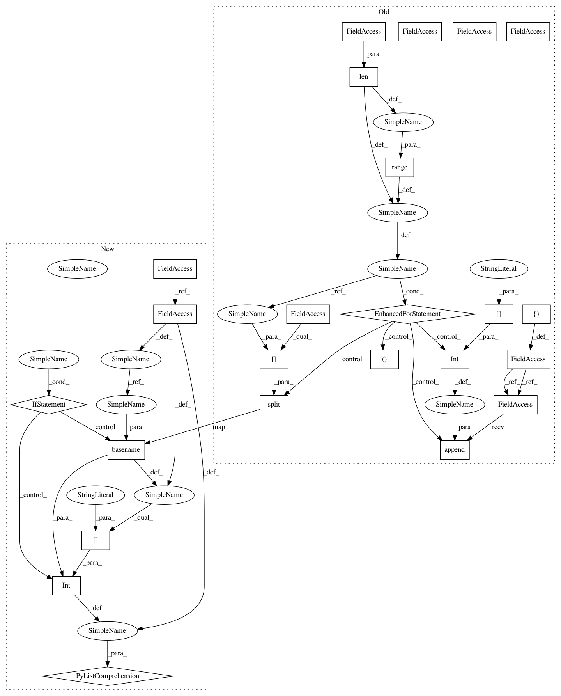

e7a6d712e65f2dccbb840cc4a26622b72146e10b,test_Sony.py,,,#,11
Before Change
// get test IDs
test_fns = glob.glob(gt_dir + "/1*.ARW")
test_ids = []
for i in range(len(test_fns)):
_, test_fn = os.path.split(test_fns[i])
test_ids.append(int(test_fn[0:5]))
DEBUG = 0
if DEBUG == 1:
save_freq = 2
test_ids = test_ids[0:5]
After Change
result_dir = "./result_Sony/"
// get test IDs
test_fns = glob.glob(gt_dir + "/1*.ARW")
test_ids = [int(os.path.basename(test_fn)[0:5]) for test_fn in test_fns]
DEBUG = 0
if DEBUG == 1:
save_freq = 2
In pattern: SUPERPATTERN
Frequency: 4
Non-data size: 24
Instances
Project Name: cchen156/Learning-to-See-in-the-Dark
Commit Name: e7a6d712e65f2dccbb840cc4a26622b72146e10b
Time: 2018-08-08
Author: pengxiaoping@xiaomi.com
File Name: test_Sony.py
Class Name:
Method Name:
Project Name: cchen156/Learning-to-See-in-the-Dark
Commit Name: e7a6d712e65f2dccbb840cc4a26622b72146e10b
Time: 2018-08-08
Author: pengxiaoping@xiaomi.com
File Name: train_Fuji.py
Class Name:
Method Name:
Project Name: cchen156/Learning-to-See-in-the-Dark
Commit Name: e7a6d712e65f2dccbb840cc4a26622b72146e10b
Time: 2018-08-08
Author: pengxiaoping@xiaomi.com
File Name: test_Fuji.py
Class Name:
Method Name:
Project Name: cchen156/Learning-to-See-in-the-Dark
Commit Name: e7a6d712e65f2dccbb840cc4a26622b72146e10b
Time: 2018-08-08
Author: pengxiaoping@xiaomi.com
File Name: train_Sony.py
Class Name:
Method Name: